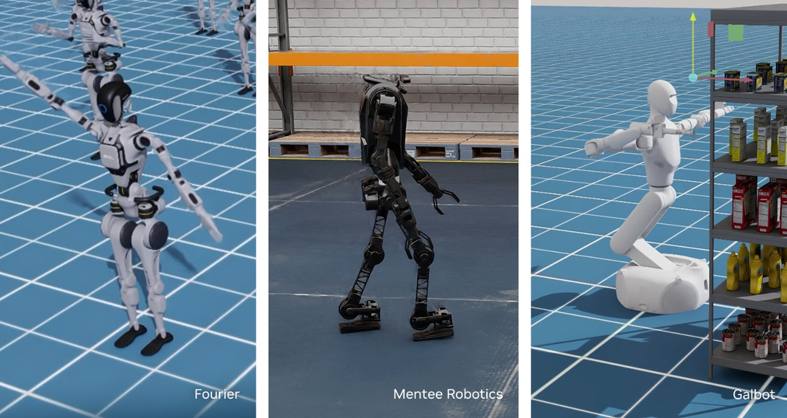

Executive Summary
Mix even physically flawless, perfectly consistent synthetic data together, and the robot still gets worse if the dosage is wrong. In our PebbloSim GR00T experiment, Pebblous measured exactly that: pouring targeted prescription data into an existing set of demonstrations with no reweighting dropped the closed-loop success rate in a single step. And yet, under those same two conditions, the offline (open-loop) metric read as near-perfect for both and saw none of the decline. That failure proved a point: data quality has to extend beyond "is it clean" to "how is it mixed" and "was it verified in execution."
Starting from that failure, we gathered the recent research on how to select and mix data. The 2024–2025 wave sorts into three axes: optimizing the mixture ratio across sources, selecting only the good demonstrations, and retrieval augmentation that fills scarce situations with similar trajectories. Each axis reports impressive gains, but they share one thing in common: every one of them stops before training begins, at the stage of cleaning the data. Even the industrial tool, NVIDIA NeMo Curator, is video-level preprocessing at scale, not a closed loop that feeds execution results back into the data.
And here sits a seat no one has filled. Map where closed-loop execution fails, diagnose those failures with embeddings, generate the missing data on purpose, adjust the mixture weights and retrain, then re-verify with the same rollouts, running that entire loop. If research has reached the prep station, the kitchen that watches the diner's reaction and rethinks the next course has not yet opened. Pebblous ran that loop once, failure and all, and the failure itself proved why the next diagnosis is needed.
73% → 43%
Closed-loop success drop
After mixing in 93 prescription episodes (24%) unweighted
2×
Idle-demo over-density
Prescription episodes vs. existing data
98·43·3%
Three closed-loop marks
Oracle · trained · untrained (same 60 tasks)
0.001
The open-loop blind spot
Near-perfect for both; missed the drop
We Mixed in Clean Data, and the Robot Got Worse
This piece begins with a failure we actually lived through. In the Pebblous PebbloSim GR00T experiment, we decided to add more data for training a robot policy. To an existing set of 299 demonstrations, we added 93 newly generated prescription episodes, produced specifically to target the situations the policy was weak at—about 24% of the total. This prescription data was built in physics simulation, so its physical consistency was guaranteed. By all conventional wisdom, adding data that targets a known weakness should have helped.

The result was the opposite. When we mixed the prescription data in with no weighting at all, the closed-loop success rate (how often the robot reaches its goal) fell from 73% to 43%. The median minimum distance to the target widened from 1.8 cm to 11.2 cm. The robot had visibly grown clumsier than before. We had added more physically flawless, perfectly consistent data, and yet, because the way we mixed it was wrong, the policy got worse.
More troubling still, the metric we usually trust saw none of this decline. The offline (open-loop) prediction error, which measures how well the trained policy matches the correct actions, was around 0.001, essentially perfect, for both the mixed-in and the not-mixed conditions. On the answer key alone, the two policies were equally top of the class. But when we actually ran the robot in closed loop, a 30-point gap opened up. The written exam was a perfect score; the practical was a fail.
Tracing the cause, we found that the prescription data was skewed toward "idle demonstrations" (episodes where the robot barely moves) at twice the share of the existing data. The policy faithfully learned this bias and acquired a tendency to choose "stay still" at decisive moments. Each individual sample was clean and physically correct, but the distribution those samples formed together pulled the policy in the wrong direction.
The lesson this failure left us is clear. Data quality does not end at "is each sample clean." Quality also includes "what is mixed and how much" and "was the result verified in execution." And to answer those two questions, you have to look at the practical (closed loop), not the answer key (open loop). Starting from this failure, we set out to survey how far academia and industry have come in the craft of selecting and mixing data.
One note up front. This piece is a follow-up to the robot-dataset landscape report we published a day earlier. Where that piece covered "how six datasets are standardized and distributed," this one covers "how you select and mix that data, and how you verify the answer in execution." It is the problem of cooking the data, which comes right after the problem of having the data.
Selecting and Mixing Data: Three Axes of Research
The recent research on selecting and mixing data for robot imitation learning sorts broadly into three axes. Laid out in pipeline order, they run like this. First comes mixture-ratio optimization, which decides how much of each data source to blend. Next comes demonstration selection, which chooses which demonstrations to keep among the data to be mixed. And last comes retrieval augmentation, which fills the situations the policy is weak at with similar trajectories. Each axis uses a different signal, but all head toward the same destination: making the data better before training begins.
2.1Mixture-ratio optimization — what to mix, and how much
The front-of-pipeline question is "in what proportion do we blend our various data sources?" Re-Mix (Hejna et al., released August 2024) learns those proportions automatically with distributionally robust optimization (DRO), rather than having a human set them by hand. It adjusts the weights against the worst-learning source. On Open X-Embodiment data, it reported an average 38% better performance than uniform mixing and 32% better than a hand-weighted policy. This is the direct counter-prescription to our own first-round failure, the very situation where blindly pouring in prescription data with no weighting dragged performance down. That said, this optimization sets the data proportions once, before training begins; it is not a process of revisiting the proportions after seeing execution results.
2.2Demonstration selection — which demonstrations to keep
Once the data to be mixed is set, the problem of picking out only the good demonstrations remains. This is the busiest axis. DemInf (Stanford · Google DeepMind Robotics, RSS 2025) selects demonstration quality without supervision by measuring the mutual information between states and actions. It gauges that information with a VAE representation and a k-nearest-neighbor estimator; this automatic scoring agreed with human expert scoring and lifted downstream success rates by 5–10% on RoboMimic. The "idle demonstrations" behind our failure carry little state–action mutual information, precisely the kind of thing this method is built to detect.
The same axis continues with studies that vary only the signal. SCIZOR (UT Austin, 2025) removes low-quality and duplicate demonstrations with a self-supervised signal, improving multi-benchmark averages by 15.4%. CUPID (Stanford, CoRL 2025) uses influence functions to estimate how each demonstration affects the policy's expected performance, reaching top-tier performance with under 33% of the curated data. And one study on this axis has a different grain: Demo-SCORE (Chen et al., 2025), which we treat separately below, because it is the only one that uses a closed-loop signal.
2.3Retrieval augmentation — filling scarce situations
The last axis, instead of selecting or mixing data, finds and attaches similar trajectories at the moment they are needed. STRAP (UW WEIRD Lab et al., ICLR 2025) embeds trajectories with a visual foundation model, then cuts them not as whole trajectories but as sub-trajectories and retrieves them with dynamic time warping (DTW). It augments a new task that has only a few samples by pulling similar chunks of behavior from large-scale data. On the LIBERO-10 benchmark it reported a 24.7–25.0% edge over prior retrieval methods. What is worth noticing here is the idea of "embedding at the sub-trajectory level." Treating data in units of a sequence of unfolding behavior, rather than a single frame, brings it close to the "action-sequence-level diagnosis" we return to later.
Put all six studies in one table and it becomes clear what signal each uses, how far each is verified, and where they all stop in common. The rightmost column is the axis of this report.
| Study | Axis | Input signal | Reported gain | Verification scope | Stops before training? |
|---|---|---|---|---|---|
| Re-Mix | Mixture ratio | Per-source data statistics (DRO) | +38% vs. uniform / +32% vs. hand-tuned | Offline optimization | Yes |
| DemInf | Selection | State–action mutual information | RoboMimic +5–10% | Offline selection | Yes |
| SCIZOR | Selection | Self-supervised low-quality/duplicate signal | Multi-bench avg. +15.4% | Offline selection | Yes |
| CUPID | Selection | Influence functions (estimates closed-loop impact) | SOTA-level with <33% of data | Selection (targets closed-loop performance by estimation) | Mostly |
| STRAP | Retrieval augmentation | Visual embedding + sub-trajectory DTW | LIBERO-10 +24.7–25.0% | Offline augmentation | Yes |
| Demo-SCORE | Selection | Closed-loop rollout success/failure | +15–35 pts absolute | Uses closed-loop signal for selection | Up to selection |
A comparison of the six studies by axis, signal, and verification scope. Figures are cross-checked against each paper's abstract and body (see References). Rightmost column: most stop at pre-training cleanup, and only Demo-SCORE feeds a closed-loop signal back, yet only as far as the selection stage.
Overlay the three axes as a single pipeline and a shared landscape appears. Mixture ratio, demonstration selection, and retrieval augmentation all sit on the road from data to training, and on none of the axes is there an arrow carrying execution results back into the data after training ends.
The three-axis research pipeline. Mixture ratio, demonstration selection, and retrieval augmentation all sit in the pre-training stage, and the feedback (red dashed) that carries execution results back into the data after training is empty across the whole landscape.
Why Offline Metrics Miss the Failure
What baffled us most in the first round was not the performance drop itself, but the fact that offline metrics saw none of it. The open-loop metric (how well the trained policy predicts the correct actions) was near-perfect for both conditions. This is not a fluke unique to us; it is a structural limitation of imitation learning.
3.1Where tiny errors compound: the closed loop
A low offline prediction error is a necessary condition for good execution performance, not a sufficient one. The reason lies in covariate shift. An imitation-learning policy makes a very small error at every step, negligible on the answer key. But a robot builds each next action on top of the results of its own previous ones. Small errors nudge the robot bit by bit into states absent from the training data, in those unfamiliar states the policy makes larger errors, and this feedback snowballs over long-horizon control. Errors invisible on the answer key detonate in execution.
This phenomenon is confirmed independently across the literature. Notably, the robomimic study reported that the policy with the lowest validation loss can actually be 50–100% worse than the best policy. In autonomous driving, strong imitation agents with very low single-step prediction error have been shown to fail consistently in long-horizon closed-loop scenarios. Diffusion-policy work made it explicit that training loss falls while validation loss rises noisily, and that the correlation between that loss value and actual rollout performance is weak. The TOTO benchmark states flatly that "offline metrics alone should not be used to fully drive algorithm development."
3.2Even training on the same data, results wobble
Deciding to look at the closed loop does not end the problem, either. Which closed-loop metric you watch (and how you handle the randomness of training) changes the conclusion. In our own measurements, repeating training on the same data and the same recipe made the completion rate swing from 43% to 30%, while the success rate held robust at 44%/41%/41%. Had we watched only the high-variance metric, we would have reached the wrong conclusion. The literature reports a case where policies trained on the identical 20 demonstrations had per-run success rates spanning from a low of 18.8% to a high of 49.2%, a spread of 30.4 points. Closed-loop metrics are powerful but noisy. You have to judge across several metrics at once, and account for the variance across repeated training runs.
3.3The only study to feed a closed-loop signal into curation: Demo-SCORE
Demo-SCORE, deferred from the previous section, enters here. It belongs to the demonstration-selection axis but uses a decisively different signal from the others. It trains a classifier on the success or failure of closed-loop rollouts (actually running the policy once) to filter out "demonstrations that resemble the trajectories a policy produces when it fails." Demonstrations that look like top students in open loop but ruin the policy in execution, data like our idle demonstrations, are weeded out on the evidence of execution results. The effect was dramatic: it lifted absolute success rates by 15–35 points over training on the full set of demonstrations, and on some long-horizon tasks revived a success rate of 0% up to 20%.
Demo-SCORE has come the closest to the loop we are trying to run. It shares the idea of choosing the teaching material by execution results rather than by the answer key. But one step remains. Demo-SCORE goes as far as choosing the bad ones from among existing demonstrations. It does not go on to generate new data targeting a missing skill and re-verify it in execution to close the loop. And the authors themselves recommend confining the method to the post-training selection stage rather than pre-training. It is both the place where a closed-loop signal first entered curation, and the place where that signal has not yet closed the loop.
Preprocessing at Scale: The NVIDIA Tooling Axis
Beyond research papers, how far have industrial tools come? No discussion of the industry standard for data curation is complete without NVIDIA's NeMo Curator. As the official curation tool for the training video of foundation models like Cosmos and GR00T, it performs embedding-based deduplication, clustering, and selection at overwhelming scale. NVIDIA states that with this tool it can process 20 million hours of video on Blackwell GPUs in just two weeks, a workload that would take an unoptimized CPU pipeline 3.4 years. The figure shows that robot data curation has risen past the experiments of individual labs to the scale of industrial infrastructure.
The datasets that support this scale are published alongside it. The Open Physical AI Dataset reaches 15 TB and some 320,000 trajectories in its robotics portion alone, and the GR00T X-Embodiment Sim dataset (roughly 346,000 trajectories at 1.91 TB) carries a commercially usable CC-BY 4.0 license. It spans a range of embodiments, from bimanual manipulation to humanoid upper-body manipulation to loco-manipulation. In the capacity to acquire data in bulk and clean it in bulk, NVIDIA is plainly ahead.

But read the grain precisely. What NeMo Curator does is video-level preprocessing at scale. Before training begins, it erases duplicates from vast piles of video, groups the similar ones, and picks the usable ones. This is powerful, but it is not the step of feeding a robot's actual closed-loop results back into data selection and generation. At exactly the same point where the previous section's three research axes stopped before training, this industrial tool stops too. It has simply widened that stopping point to industrial scale. Preprocessing at scale and execution-time verification are problems at different layers, and no amount of growing the former fills the latter on its own.
The Gap in the Landscape: A Loop No One Has Closed
Summarize the landscape we have surveyed in one sentence: mixture-ratio optimization, demonstration selection, retrieval augmentation, and industrial-scale preprocessing all stop at cleaning the data before training begins. Even Demo-SCORE, the first to draw in a closed-loop signal, comes only as far as choosing demonstrations with that signal. So the seat no one has filled is not any single technique. It is the loop itself—the one that joins the pieces into a single cycle.
That loop has five steps. First, (1) map where the policy fails using closed-loop rollouts. Then (2) diagnose the failure regions with embeddings, looking at both the scene level and the action-sequence level together. When the diagnosis reveals a missing skill, (3) generate prescription data targeting it, (4) adjust the mixture weights and retrain, and (5) re-verify with the same rollouts. The decisive part is that step 5 returns to step 1 and the loop closes. Not a single cleanup, but a recurring kitchen where execution results keep feeding back into the data.
The closed-loop data-curation loop. Five steps cycle, and re-verification (⑤) returns to the failure map (①) to close the loop. Most existing research breaks at the diagnosis/selection piece (②), with Demo-SCORE coming as far as opening that piece with a closed-loop signal.
A cooking analogy makes it easy to see. Research so far has peaked at the craft of prepping ingredients. It has grown refined at which ingredients to add and how much (mixture ratio), how to pick out the spoiled ones (demonstration selection), and where to source the missing ones (retrieval augmentation). But all this prep ends inside the kitchen, before the dish is served. The kitchen that watches the diner's reaction after the food goes out, and re-picks the ingredients for the next course, has not yet opened its doors. The closed loop is exactly that reaction at the table.
The gap is not the absence of a single technique but a loop left open. The pieces are already splendidly in place. The problem is that the last arrow, the one carrying execution results back into the data, is drawn nowhere in the landscape. And the experience of actually drawing that arrow, failures included, is itself a rare piece of primary evidence.
What Our Failure Proved: Filling the Gap with Numbers
Back to the first round. Our failure is the record of actually running the loop drawn above, once around, until we tripped. But that stumble points precisely at which part of the loop is still missing. Three clusters of numbers show that spot.
First, the gap between the answer key and execution. Under the mixed-in and not-mixed conditions, the open-loop prediction error was near-perfect for both at 0.001, but the closed-loop success rate widened from 73% to 43%, and the median minimum distance to the target from 1.8 cm to 11.2 cm. Measured on three closed-loop marks, the spectrum of the policy's skill is sharp: the oracle policy, a perfect reference, at 98%; the policy we just trained at 43%; and the untrained initial version at 3%. Offline metrics cannot tell apart the top two policies on this spectrum. Only the closed loop sees the difference.
| Measure | Before mixing in prescription data | After unweighted mix-in | What it sees |
|---|---|---|---|
| Open-loop prediction error | ~0.001 (near-perfect) | ~0.001 (near-perfect) | Sees no difference |
| Closed-loop success rate | 73% | 43% | Catches the 30-pt drop |
| Median minimum distance | 1.8 cm | 11.2 cm | Catches the degradation |
The same two conditions, measured in open loop and closed loop. The answer key (open loop) sees both policies as equally top of the class; the practical (closed loop) exposes a 30-point gap.
Second, the twin axes of diagnosis. Tracing why performance fell, we found that in the prescription data the share of idle demonstrations (where the robot barely moves) was twice that of the existing set. The crucial point is that scene-level statistics, which look at frames one by one, could not catch this skew. An individual idle frame does not look strange. The problem lay in how those frames connect over time, in the information the action carries. Here the principle behind DemInf, which filters demonstrations by state–action mutual information, meets STRAP's idea of treating data at the sub-trajectory level. What scene-level diagnosis missed, action-sequence-level diagnosis should have caught. Our failure proved the need for sequence-level diagnosis.
Third, the lesson of metric choice. Repeating training on the same data and recipe made the completion rate swing from 43% to 30%, while the success rate held robust at 44%/41%/41%. Moving to the closed loop does not mean you can trust just any metric. To close the loop, you first have to choose the signal you feed back with care, and that signal has to survive the variance of repeated training.
All three clusters of numbers point to one place. If Demo-SCORE came as far as choosing demonstrations with a closed-loop signal, our failure showed in the flesh why the next two steps are needed: using diagnosis to pinpoint what is missing, generating data to target it, and re-verifying with the same rollouts. It even revealed how that targeted generation backfires when done clumsily (idle-demo over-density), and why scene-level diagnosis cannot catch it. The failure, in effect, left behind the other half of the loop as its own design document.
Why Pebblous Is Watching This Gap
The gap this report identifies, the absence of a loop that feeds closed-loop execution results back into the data, maps directly onto Pebblous's business coordinates. We trace that connection across four angles.
Where business meets technology
Pebblous's DataClinic and AI-Ready Data have long stood for "verifying data quality before training." This report extends that concern into Physical AI, into the closed-loop execution of robot imitation learning. The PebbloSim GR00T experiment is concrete grounding for a stance that treats data quality not as static cleaning but as a dynamic loop verified in execution. Data quality is not decided inside a file; it is decided by the actual behavior of the robot trained on that data.
The data-quality view
The measurement that even physically flawless, perfectly consistent synthetic data makes a robot worse when the mixture and dosage are wrong shows that data quality is decided not by the cleanliness of individual samples but by distribution, composition, and interaction with the model's internal representation. The way idle demonstrations contaminate a policy dovetails with DemInf's mutual-information view, and the failure directly proved why twin-axis diagnosis (looking at both the scene level and the action-sequence level) is needed. The proposition that verifiability comes before scale holds just as well for physical data.
Practical implications for customers and partners
For customers and partners training robots or VLAs, this piece is immediately practical. It gives concrete counter-examples and guidance on why the intuition that "more data is better" is dangerous (the counter-example of unweighted mix-in), why trusting offline metrics alone lets failures slip through (the success drop the answer key never saw), and how to introduce closed-loop verification, mixture weighting, and sequence-level diagnosis. It is also a checklist of the questions to ask before scaling data up.
Pebblous's positioning
In a landscape where five studies commonly stop at pre-training cleanup and even NeMo Curator is preprocessing at scale, primary evidence from running the entire loop once, failures included, is rare. This is an observation, not a boast. What is hard for others to replicate is not the conclusion but the experience of running the execution itself. Only a kitchen that has actually watched the reaction at the table can rethink the ingredients for the next course.
What will the next competition in robot data curation be fought over? The craft of prepping ingredients is already refined. The remaining question is not "how well did you prep" but "did you close the loop that re-preps based on the reaction at the table?" Format and prep are established across the landscape; drawing the arrow that feeds execution results back into the data, on top of them, is the next coordinate. Our first round is the record of drawing that arrow for the first time—stumble and all.
Pebblous Data Communication Team
July 17, 2026
References
Academic papers
- 1.Hejna, J. et al. "Re-Mix: Optimizing Data Mixtures for Large-Scale Imitation Learning." Released August 2024. arXiv:2408.14037.
- 2.Memmel, M. et al. "STRAP: Robot Sub-Trajectory Retrieval for Augmented Policy Learning." ICLR 2025. arXiv:2412.15182. Project: weirdlabuw.github.io/strap.
- 3.Hejna, J. et al. "Robot Data Curation with Mutual Information Estimators (DemInf)." RSS 2025 (Stanford · Google DeepMind Robotics). arXiv:2502.08623.
- 4.Chen, A. et al. "Demo-SCORE: Learning to Filter Demonstrations with Closed-Loop Rollouts." 2025. arXiv:2503.03707.
- 5.Zhang, Y. et al. "SCIZOR: Self-Supervised Data Curation for Large-Scale Imitation Learning." 2025 (UT Austin). arXiv:2505.22626.
- 6.Agia, C. et al. "CUPID: Curating Data your Robot Loves with Influence Functions." CoRL 2025 (Stanford). arXiv:2506.19121.
- 7.Mandlekar, A. et al. "What Matters in Learning from Offline Human Demonstrations for Robot Manipulation (robomimic study)." Quantitative basis for the finding that the best-validation-loss policy can be 50–100% worse than the actual best.
Industry blogs · dataset cards
- 8.NVIDIA. "Open Physical AI Dataset." Source for the NeMo Curator "20M hours / 2 weeks / Blackwell vs. 3.4 years CPU" figures; robotics portion 15 TB · 320,000+ trajectories.
- 9.NVIDIA. "Advancing Robot Learning, Perception and Manipulation." Source for the NeMo Curator "7x faster" and "100+ petabytes" figures (distinct metrics from the 20M-hours/2-weeks figure in item 8).
- 10.nvidia/PhysicalAI-Robotics-GR00T-X-Embodiment-Sim (CC-BY 4.0, roughly 346,000 trajectories / 1.91 TB).
Comparative context
- 11.Open X-Embodiment Collaboration. "Open X-Embodiment: Robotic Learning Datasets and RT-X Models." arXiv:2310.08864. 1M+ trajectories, 22+ embodiments (varies by aggregation method; conservative figures given).
- 12.Khazatsky, A. et al. "DROID: A Large-Scale In-The-Wild Robot Manipulation Dataset." RSS 2024. arXiv:2403.12945. 76,000 trajectories / roughly 350 hours. Project: droid-dataset.github.io.